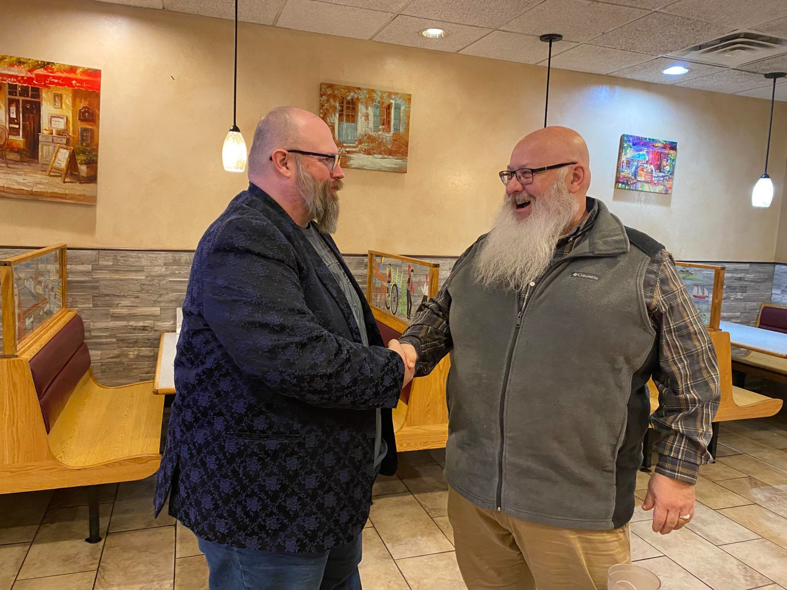
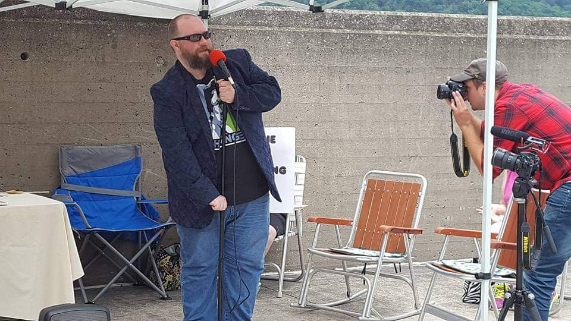
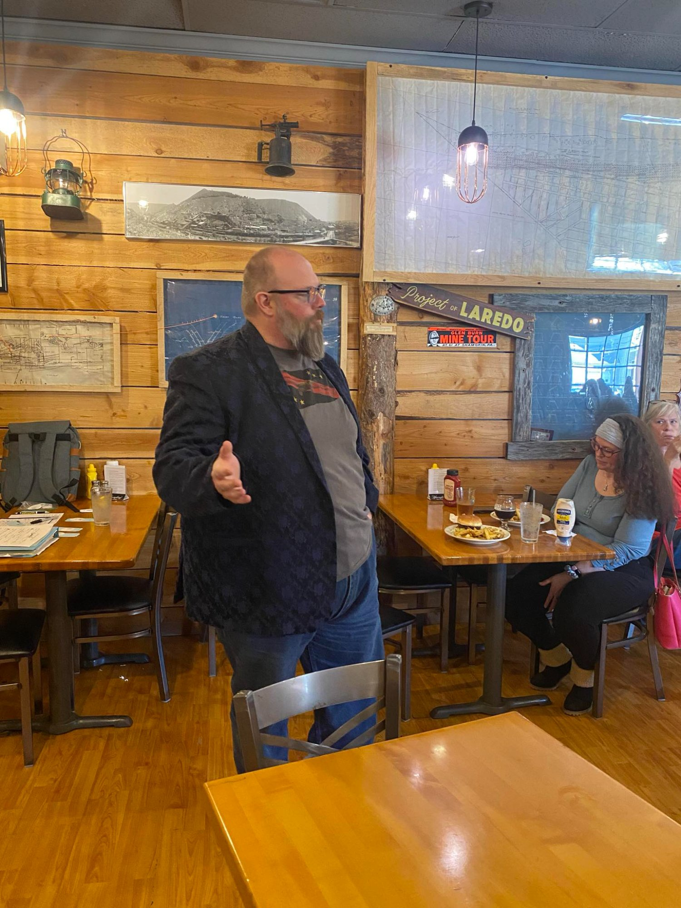

Activism in the Valley




Lifelong Sunbury Resident
Small Business Owner
Elected Constable
I'm running for State Representative because I've watched government grow distant from the people it's supposed to serve — my neighbors, my clients, the people I've known my whole life here in Sunbury. The Pennsylvania Constitution declares that "All power is inherent in the people," and I believe it's time we live up to those words again.
Across our nation, we've seen government become secretive and unaccountable. Too often, those in power act as though the people exist to serve the government, rather than the other way around. I reject that idea completely.
Our founders built Pennsylvania on the principles of transparency, individual freedom, and the right to live one's life without interference — so long as no harm is done to others. These are not abstract ideals; they are promises written into our Constitution and paid for by generations who believed that liberty is worth defending.
Pennsylvania is the birthplace of liberty, and I see our Commonwealth — and the states in general — as the last line of defense for those promises. When Washington grows overreaching or corrupt, the duty to protect the rights of the people falls to us.
That's why I'm fighting for police accountability, cannabis legalization, privacy rights, and transparent government — because liberty isn't just a word. It's a promise we make to each other.
I'm a lifelong resident of Sunbury. I graduated from Shikellamy High School and earned my certificate in Electronics Technology from the Sun Area Career and Technology Center in 1997. I completed my degree in electronics engineering in 1999, and I've spent my entire career working in IT for small businesses and individuals right here in District 108.
I've always had a deep interest in politics and the principles that founded our nation. I believe the Declaration of Independence may be the greatest document ever written — a blueprint for human liberty that still guides us today.
In 2013, frustrated that neither major political party was truly serving the needs of the people, I co-founded the Susquehanna Valley Libertarian Party. From 2017 to 2019, I served two terms as Chairman of the Libertarian Party of Pennsylvania, helping candidates and committees reach out to all Pennsylvanians with a message of freedom and accountability.
In 2017, I was elected Constable for Sunbury's 6th Ward. Since then, I've served at the polling place providing security, upholding voter integrity, and preventing voter intimidation. In 2023, voters re-elected me to a second six-year term — a testament to my commitment to fair and transparent elections.
In 2019, I founded Bingaman Solutions, my own IT services company serving the Susquehanna Valley. Every day, I work with small business owners and individuals who are trying to build something, provide for their families, and live their lives without unnecessary interference. They deserve a representative who understands that government works best when it protects liberty — not when it gets in the way.
In 2024, I served as Captain (Chairman) of the United States Pirate Party, fighting for copyright and patent reform to protect innovation and free expression. My term ended on July 4, 2025 — a fitting date for someone committed to defending liberty.
I'm not running to climb a political ladder or to serve party bosses. I'm running because the people of District 108 deserve a representative who will fight loudly and proudly for their constitutional rights, their privacy, their economic freedom, and transparent government that works in the open.
Your life. Your way. Your PA.
Ready to fight for liberty in Pennsylvania?